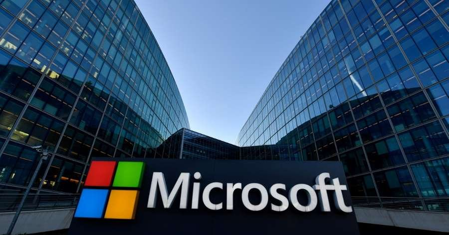

Praticando responsividade
A Microsoft foi fundada por Bill Gates e Paul Allen em 4 de abril de 1975 para desenvolver e vender interpretadores BASIC para o Altair 8800. A empresa posteriormente iria dominar o mercado de sistemas operacionais de computadores pessoais com o MS-DOS, em meados da década de 1980, seguido pelo Microsoft Windows. A oferta pública inicial da empresa, em 1986, e o subsequente aumento no preço de suas ações, tornou bilionários e milionários cerca de um terço dos 12 mil funcionários da Microsoft. É considerada a terceira empresa startup de maior sucesso de todos os tempos em termos de capitalização de mercado, receita, crescimento e impacto cultural.A Microsoft foi fundada por Bill Gates e Paul Allen em 4 de abril de 1975 para desenvolver e vender interpretadores BASIC para o Altair 8800. A empresa posteriormente iria dominar o mercado de sistemas operacionais de computadores pessoais com o MS-DOS, em meados da década de 1980, seguido pelo Microsoft Windows. A oferta pública inicial da empresa, em 1986, e o subsequente aumento no preço de suas ações, tornou bilionários e milionários cerca de um terço dos 12 mil funcionários da Microsoft. É considerada a terceira empresa startup de maior sucesso de todos os tempos em termos de capitalização de mercado, receita, crescimento e impacto cultural.A Microsoft foi fundada por Bill Gates e Paul Allen em 4 de abril de 1975 para desenvolver e vender interpretadores BASIC para o Altair 8800. A empresa posteriormente iria dominar o mercado de sistemas operacionais de computadores pessoais com o MS-DOS, em meados da década de 1980, seguido pelo Microsoft Windows. A oferta pública inicial da empresa, em 1986, e o subsequente aumento no preço de suas ações, tornou bilionários e milionários cerca de um terço dos 12 mil funcionários da Microsoft. É considerada a terceira empresa startup de maior sucesso de todos os tempos em termos de capitalização de mercado, receita, crescimento e impacto cultural.
A Microsoft foi fundada por Bill Gates e Paul Allen em 4 de abril de 1975 para desenvolver e vender interpretadores BASIC para o Altair 8800. A empresa posteriormente iria dominar o mercado de sistemas operacionais de computadores pessoais com o MS-DOS, em meados da década de 1980, seguido pelo Microsoft Windows. A oferta pública inicial da empresa, em 1986, e o subsequente aumento no preço de suas ações, tornou bilionários e milionários cerca de um terço dos 12 mil funcionários da Microsoft. É considerada a terceira empresa startup de maior sucesso de todos os tempos em termos de capitalização de mercado, receita, crescimento e impacto cultural.A Microsoft foi fundada por Bill Gates e Paul Allen em 4 de abril de 1975 para desenvolver e vender interpretadores BASIC para o Altair 8800. A empresa posteriormente iria dominar o mercado de sistemas operacionais de computadores pessoais com o MS-DOS, em meados da década de 1980, seguido pelo Microsoft Windows. A oferta pública inicial da empresa, em 1986, e o subsequente aumento no preço de suas ações, tornou bilionários e milionários cerca de um terço dos 12 mil funcionários da Microsoft. É considerada a terceira empresa startup de maior sucesso de todos os tempos em termos de capitalização de mercado, receita, crescimento e impacto cultural.A Microsoft foi fundada por Bill Gates e Paul Allen em 4 de abril de 1975 para desenvolver e vender interpretadores BASIC para o Altair 8800. A empresa posteriormente iria dominar o mercado de sistemas operacionais de computadores pessoais com o MS-DOS, em meados da década de 1980, seguido pelo Microsoft Windows. A oferta pública inicial da empresa, em 1986, e o subsequente aumento no preço de suas ações, tornou bilionários e milionários cerca de um terço dos 12 mil funcionários da Microsoft. É considerada a terceira empresa startup de maior sucesso de todos os tempos em termos de capitalização de mercado, receita, crescimento e impacto cultural.